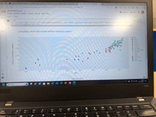

Smart Connection
Workshop 1, Sept 1, 2023
Op vrijdag 1 september zijn we als klas de dag begonnen met reflecteren op de 6 criteria voor de minor smart industry. Hier heb ik aangegeven dat ik vooral betrokkenheid heb getoond, door aan alle workshops dusver aanwezig te zijn en gewerkt heb aan disciplines buiten eigen vak. Gisteren heb ik namelijk kennisgemaakt met Internet of Things met behulp van Arduino.
Vervolgens heb ik geleerd over HTML code en GitHub. Ik heb veel vragen gesteld aan Brian, zodat ik het goed begreep wat er stond. Ik heb bijvoorbeeld geleerd om de HTML code aan te passen en zo bijvoorbeeld te verwijzen naar een online video of afbeelding (zie foto hieronder). Eerst lukte het niet om naar de afbeelding te verwijzen. Brian heeft mij uitgelegd dat ik dan de afbeelding los moet openen in een nieuw tabblad om de juiste link te kunnen kopiëren en die toe te voegen aan de HTML code. Ook hebben we samen in de workshop CSS geïmplementeerd in de HTML code.
Workshop 2, Sept 6, 2023
Op woensdag 6 september was de tweede workshop van Smart Connection gepland. Tijdens de workshop hebben we eerst de HTML herhaalt van vorige week en daarna hebben we samen de code doorgenomen. Vooral bij laatste voorbeeld (zie foto) kregen we hoe je een invulveld kon programmeren en meer over de opmaak wat allemaal mogelijk is, zoals een fixed box met “Hello” aan de zijkant, een dotted omlijsting en als je met je muis over een knop gaat dat deze van kleur verandert (zie foto hieronder). Voor volgende week is het de bedoeling dat we alvast zelf gespeelt/geprobeerd hebben om een eigen portfolio pagina op te zetten. Aan het einde van de les hebben we als klas nog gereflecteerd op de competenties en hier heb ik aangegeven dat ik vandaag vooral gewerkt heb aan competentie 1 (initiatief/betrokkenheid) - vragen stellen aan opdrachtgevers en competentie 4 (persoonlijke groei) - andere discipline/opdracht kiezen; meer out-of-the-box om mijzelf uit te dagen en te ontdekken of de bouwsector iets voor mij is. Vorig schooljaar heb ik een studiekeuzeadvies traject gevolgd, waaruit bleek dat de huidige opleiding te weinig praktisch voor mij is en dat ik vooral interesse heb in de architectuur/ontwerp richting. De opdracht van Giesbers zou dus een mooie mogelijkheid voor mij zijn om dit verder te onderzoeken.
Workshop 3, Sept 13, 2023
Woensdag 13 september heb ik tijdens de workshop geleerd over API. API staat voor Application Programming Interface en is een manier om op geformaliseerde manier gegevens uit te wisselen tussen een laptop en database bijvoorbeeld. Wij hebben dit geprobeerd met Open Weather. Hubèrt heeft uitleg gegeven over de code en daarna konden we zelf aan de slag met de tutorial. Ik vond dit best wel lastige code, maar met een beetje hulp van Brian - ik kreeg de developer console niet geopend -, is het gelukt (zie foto's hieronder).
Workshop 4, Sept 21, 2023
De week daarop heeft Witek, met aanvullingen van Rinke, uitleg gegeven over analytics (aan de hand van voorbeelden > zie foto’s) en de DIKW pyramid:
- Data: observatie > losse punten (sensor)
- Information: informatie heeft betekenis > leggen van relaties
- Knowledge: kennis > conclusies, wetmatigheid
- Wisdom: wijsheid > beslissen wat je moet gaan doen
Python is de programmeer taal voor data science en daarmee kun je een hele website maken.
Workshop 5, Sept 28, 2023
Vandaag heeft Witek tijdens de workshop Smart Connection uitleg gegeven over AI en allerlei voorbeelden gegeven. Het belangrijkste wat ik uit deze workshop heb meegenomen is, dat ‘Explainable en Responsible AI’ problemen zijn die de komende jaren opgelost moeten worden.
Workshop 6, Okt 5, 2023
Tijdens deze workshop zijn we verder aan de slag gegaan met InfluxDB. Thuis had ik op dinsdag 3 oktober data verzameld en een bucket aangemaakt waar ik de data naartoe kon schrijven in InfluxDB (zie foto hieronder).
Veel klasgenoten hadden geen data verzameld. Die gingen daarmee aan de slag samen met Hubèrt. Ik kon met mijn vooraf verzamelde data spelen en heb bijvoorbeeld het gemiddelde weergegeven in een dashboard (zie foto’s hieronder).